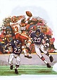
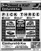
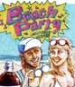
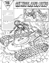
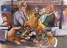

JSON Tests
Bible Verse Retrieval Ajax Test

| id | category | image | media | title | usage | date | blurb | desc |
| 001 | Characture |
art_aBnsFrmHell1.gif |
Pen & Ink | World According to a Bunny From Hell (Part One) | Artist Editorial | October 1988 | Creative portrait of the “Original Bunny From Hell” in the context of co-workers from the Ambrosi and Associates, circa 1987-89 | My friend, code-name “Bunny”, was one of my favorite subjects. The characture portrays the production staff, creative artists, management and sales employees with Ambrosi and Associates, circa 1987-89. The principals are carefully individualized portraits, including Nick Ambrosi as “Aldo”. |
| 002 | Characture |
art_aBnsFrmHell2.gif |
Pen & Ink | World According to a Bunny From Hell (Part Two) | Artist Editorial | November 1988 | Second Version of the "Original Bunny From Hell" in the context of co-workers from the Ambrosi and Associates, circa 1987-89 | As a follow-up to the first installment, the second version portrays the digital production group at Ambrosi and Associates, including myself. The principals are carefully individualized portraits of my fellow “Bunnies From Hell”. |
| 003 | Student Work |
 art_alnAttckRgb.jpg |
Pen & Ink | Alien Attack | Artist Creative | August 1976 | Graphic Novel Concept for "Alien Invasion" | First in a series of conceptual illustrations for my graphic novel “Alien Invasion”. Other illustrations from the concept are black and white pencil art, and the novel remains incomplete. The main protagonist is an "urban resistance fighter". |
| 004 | Student Work |
art_ancntFishRGB.jpg |
Lithography | Placoderms Attack | Artist Creative | October 1976 | Marine Archaeology - Placoderms | First in a series of conceptual illustrations depicting ancient predators, including a plesiosaur. Two ancient fish are shown hunting. The stone lithography technique was taught as part of high school art program. |
| 005 | Student Work |
art_animalFarm.jpg |
Copper Plate Etching | Animal Farm Montage | Artist Creative | November 1977 | Montage of George Orwell's “Animal Farm” | Copper plate etching exercise inspired by George Orwell's “Animal Farm”, including several portraits. |
| 006 | Illustration |
 art_bearsDef1.jpg |
Illustration | Color Markers | Artist Editorial | August 1986 | Sports Action Series - Chicago Bears Defense | First in a series of sports-related illustrations executed using color markers on paper. Image shows two Chicago Bears defenders (Shaun Gayle and Dave Duerson) against Washington Redskins Hall of Fame reciever Ricky Sanders in the 1988 NFC Championship First Round game. |
| 007 | Illustration |
art_bJvsRnLtArt.jpg |
Illustration | Color Markers | Artist Editorial/td> | August 1989 | Sports Action Series - Bo Jackson | Second in a series of sports-related illustrations executed using color markers on paper. Image shows Oakland Raiders Bo Jackson against San Francisco 49er Hall of Fame Defensive Back Ronny Lott in a November 1988 game. |
| 008 | Illustration |
art_brbrnAttckBW.jpg |
Pencil Drawing | Barbarians Attack! | Artist Creative | July 1980 | Alien Invasion - Outlanders attacking | Second in a series of conceptual illustrations for my graphic novel “Alien Invasion”. Image is a montage of multiple character studies for the “Human versus Human” part of story. The main characters are depicted fighting with the barbarians with a variety of weapons. |
| 009 | Student Work |
art_brbrnDethPile.jpg |
Pen & Ink | Barbarian Death Pile | Artist Creative | June 1976 | Barbarians - Warrior Victory | Early graphic novel illustration of a barbarian warrior among a pile of vanquished foes, inspired by the characters of pulp fiction author Robert E. Howard |
| 010 | Illustration |
art_brbrnVkgFgt.jpg |
Pencil Drawing | Vikings versus Barbarians | Artist Creative | July 1979 | Short Description | Early graphic novel illustration of Vikings battling a horde of even more fierce barbarians. Inspired by the characters of pulp fiction author Robert E. Howard |
| 011 | Student Work |
art_cavDwlrsBrthMain.jpg |
Pencil Illustration | Cave Dwellers Birth | Artist Creative | November 1976 | Cave Dwellers gather to witness the hatching | Student figure studies with fantasy characters added in a subterranean cavern. Inspired by the fiction of Robert Heinlein and Frank Herbert. |
| 012 | Student Work |
art_cavDwlrsBrth1.jpg |
Pencil Illustration | Cave Dwellers (Detail) | Artist Creative | November 1976 | Detail of Cave Dwellers including figure study | Detail of student figure studies with fantasy characters in a subterranean setting. Inspired by the fiction of Robert Heinlein and Frank Herbert. |
| 013 | Illustration |
art_cavDwlrsBrthBW.jpg |
Pencil Illustration | Cave Dwellers (Detail) | Artist Creative | November 1976 | Detail of Cave Dwellers including figure study | Detail of fantasy characters in profile in a subterranean setting. Inspired by the fiction of Robert Heinlein and Frank Herbert. |
| 014 | Student Work |
art_dethMtchRgb.jpg |
Oil on Canvas | Chess Match of Death | Artist Creative | October 1979 | Queen crushes Pawn in a Chessboard fantasy | Image of animated chess pieces including a Killer Queen and her Pawn victim, executed as oil paint on canvas. |
| 015 | Miscellaneous Artwork |
art_dogCaponPrt.jpg |
Oil on Canvas | Portrait of Capone | Artist Creative | July 1984 | Portrait of Shepherd/Malamute Mix | Portrait executed from live pose of Capone, a German Shepherd and Alaskan Malamute mutt with a heart of gold. |
| 016 | Student Work |
art_dpSeaCnstrtnBW.jpg |
Lithograph on Paper | Welcome to Deep Blue | Artist Creative | April 1977 | Marine Construction concept lithograph | First in a series of conceptual illustrations depicting future concepts, including the construction of human habitats in the ocean. The stone lithography technique was taught as part of high school art program. |
| 017 | Characture |
 art_groversParty.gif |
Pen & Ink | Welcome to Grover’s Party | Artist Editorial | January 1989 | Grover’s Space Vikings | Group portrait depicting the friends of Grover from his bachelor party. |
| 018 | Illustration |
art_mnrdFergBW.jpg |
Pencil Drawing | Hail to Maynard | Artist Creative | January 1982 | Montage of Jazz legend Maynard Fergusen in pencil | Montage of portraits of Jazz legend Maynard Ferguesen from supplied photographs and record album cover images. |
| 019 | Commissioned Artwork | art_mystryFrstPnl1.jpg | Acrylic on Canvas | Mystery Forest (1/3) | Artist Creative | December 1980 | Large Scale Wall Tryptic of the “Mystery Forest” | Panel one in a 54-inch high, 7-foot wide acrylic on canvas tryptic. Commissioned by a petroleum equipment supply company office to show the positive effects of the business. The pumps and controls are coexisting with the forest under a pleasant streetlight. |
| 020 | Commissioned Artwork | art_mystryFrstPnl2.jpg | Acrylic on Canvas | Mystery Forest (2/3) | Artist Creative | January 1981 | Large Scale Wall Tryptic of the “Mystery Forest” | Panel two in a 54-inch high, 7-foot wide acrylic on canvas tryptic. Commissioned by a petroleum equipment supply company office to show the positive effects of the business. The center section shows the wide meadow and an abandoned road. |
| 021 | Commissioned Artwork | art_mystryFrstPnl3.jpg | Acrylic on Canvas | Mystery Forest (3/3) | Artist Creative | January 1981 | Large Scale Wall Tryptic of the “Mystery Forest” | Panel three in a 54-inch high, 7-foot wide acrylic on canvas tryptic. Commissioned by a petroleum equipment supply company office to show the positive effects of the business. The right section shows a futuristic city with a new power source, showing the progress toward new energy sources. |
| 022 | Illustration |
art_nudDancGrl.jpg |
Watercolor Drawing | Harem Dancer Nude | Artist Creative | March 1990 | Study of a dancer in the Persian tradition | Figure study of a live model recast as a Dancer clad in silks, veils and gilded lace in the Persian tradition of harem entertainers. |
| 023 | Advertising |
ad_bendTrvlOrgn.jpg |
Static Graphic | Travel to Bend, Oregon | Artist Web Ad | April 1999 | Spot advertisement for travel destinations in Bend, Oregon | Part of a student presentation. Created with Adobe CS and oupt at multiple aizes and crop dimensions. Largest version displayed. Software: Adobe Photoshop. |
| 024 | Advertising |
ad_conTechLogo1.gif |
Web Logo | ConTech Sales Logo | Commercial Sample | February 1999 | Logo for Methode Subsidiary | Created as part of the launch for the Contech Hardware Sales Division in Carrollton, Texas. Working directly with the senior management, developed and launched full campaign in 10 days. Initially licensed and owned by Methode Electronics, presumed to be expired after subsidiary spin-off. Software: Adobe Illustrator. |
| 025 | Advertising |
 ad_ndaKiaPick3.gif |
Digital Print Ad | Kia Pick Three Promo Ad | Commercial Sample | July 2000 | Newprint Ad Production | Executed as part of contract/temporary assignment with a small Schaumburg Ad agency specializng in retail sales advertising. Software: Macromedia FreeHand. |
| 026 | Advertising |
 ad_unlmtdLdCalls4c.jpg |
Digital Print Ad | Unlimited Local Calls Promo Ad | Commercial Sample | July 2000 | Newprint Ad Production | Executed as part of contract/temporary assignment with a small Schaumburg Ad agency specializng in retail sales advertising. Software: Macromedia FreeHand. |
| 027 | Advertising |
 ad_pwpHavBalls |
Digital Print/Web Ad | Pentwater Has Balls Ad | Commercial Sample | June 1994 | Newprint Ad Production | Executed as part of commissioned advertising and marketing campaign for Pentwater Wire, Inc. Animated GIF of initial ads for their pallet containment product line. License to client expired. Software: Adobe Illustrator. |
| 028 | Advertising |
 alo_beachPartyAd.jpg |
Marker Layout | Beach Party Ad | Artist Creative | June 1989 | Colorful beach party scene with teen boy and girl | Traditional art marker layout as demonstration for defunct technique of executing detail color layouts for client pitches and film photography. Created as a portfolio sample for agency and client work. Target sector was soft drinks or sports equipment. See American Movie Channel program “Madmen” for references to this type of ad agency activity. |
| 029 | Advertising |
 alo_CatRadoCntrl.gif |
Pencil Layout | Radio Control Car Ad | Commercial Sample | July 1991 | Catalog page layout of remote-control toy in action | Traditional pencil drawing layout for client approval and film photography. Executed as part of then ongoing in-house client work for a promotional product buying catalog for the exclusive use of small and medium-sized businesses. Agency business model similar to airline premium sales flyers and supplanted by more effective e-commerce and promotional ad models. |
| 030 | Advertising |
 alo_mlrWlcmHmAd1.jpg |
Marker Layout | Welcome Home Ad (1/3) | Artist Creative | June 1987 | Miller Brewing ad concept showing people with banner | Traditional art marker layout with branded product for Miller Brewing, executed as portfolio sample of detailed storyboard layouts for prospective agency clients. This original work was shown as part of a portfolio for five years to multiple agencies. The concept was eventually reproduced almost scene-for-scene for a 1991 TV advertisement by the official Chicago-area agency for the same brand without authorization! See American Movie Channel program “Madmen” for references to this type of ad agency activity. |
| 031 | Advertising |
 alo_mlrWlcmHmAd2.jpg |
Marker Layout | Welcome Home Ad (2/3) | Artist Creative | June 1987 | Miller Brewing ad concept showing veteran in uniform | Traditional art marker layout with branded product for Miller Brewing, executed as portfolio sample of detailed storyboard layouts for prospective agency clients. This original work was shown as part of a portfolio for five years to multiple agencies. The concept was eventually reproduced almost scene-for-scene for a 1991 TV advertisement by the official Chicago-area agency for the same brand without authorization! See American Movie Channel program “Madmen” for references to this type of ad agency activity. |
| 032 | Advertising |
alo_xtraComAd.jpg |
Digital Print/Web Ad | XtraCom Call Plan Ad | Commercial Sample | July 1994 | Digital ad layout in the style of “Archie Comics” for client pitch book | Executed as part of pitch book content for a start-up agency that went out of business, before that was considered a sign of success. License to client expired. Software: Adobe Illustrator. |
| 033 | Advertising |
alo_TMNTWatches.jpg |
Color Marker Layout | Teenage Mutant Ninja Turtle branded watches | Commercial Sample | July 1991 | Color catalog page layout of licensed product and children in action | Traditional marker photo layout, executed as part of then ongoing in-house client work for a promotional product buying catalog for the exclusive use of small and medium-sized businesses. Agency business model similar to airline premium sales flyers and supplanted by more effective e-commerce and promotional ad models. |
| Index | Category | Img Name | Media | Title | Usage | Date | Short Description | Description |